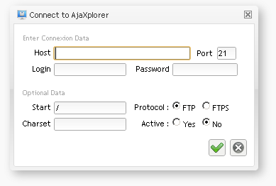

This one will test the credentials directly against an FTP server, and create the user if he is recognized. There are two way to make it works, but in both case it must be associated to a specific repository. You need to know the repository ID, so you should define it manually inside the bootstrap_repositories.php file, or create it via the GUI and copy the "unique id" column displayed in the repository list. In both case, the transmission from the user's credentials from the "auth" driver to the "access" repository will be handled via the "SESSION_CREDENTIAL" mechanism. Thus you have to make sure in the Settings > Core Options > Common "Auth" options that "Store Credentials in Session" is set to true.
The first use case is when you already know the FTP server to which you want to connect. In that case, you must define a repository using the access.ftp driver with all the necessary FTP connexion informations, can be something like this inside conf/boostrap_repositories.php :
$REPOSITORIES["predefined_ftp"] = array(
"DISPLAY" => "Ajxp FTP Server",
"DRIVER" => "ftp",
"DRIVER_OPTIONS"=> array(
"FTP_HOST" => "ftp.myserver.com",
"FTP_PORT" => "21",
"DEFAULT_RIGHTS" => "rw",
"USE_SESSION_CREDENTIALS" => true,
)
);
Here the unique id is "predefined_ftp", then configure the AUTH_DRIVER in boostrap_plugins.php like this :
"AUTH_DRIVER" => array(
"NAME" => "ftp",
"OPTIONS" => array(
"LOGIN_REDIRECT" => false,
"REPOSITORY_ID" => "predefined_ftp",
"ADMIN_USER" => "admin",
"FTP_LOGIN_SCREEN" => false,
"AUTOCREATE_AJXPUSER" => true,
"TRANSMIT_CLEAR_PASS" => true,
)
),
The second possible case is when you want to let your user do whatever they want and connect any remote FTP server, transforming Pydio into a powerful "netFtp" client. In that case, you'll configure the predefine repository without the FTP_XXX options but with a DYNAMIC_FTP option set to true, and the Auth driver will have the option FTP_LOGIN_SCREEN set to true, which will override the standard login dialog and add a more complex one with all FTP connexion information :
